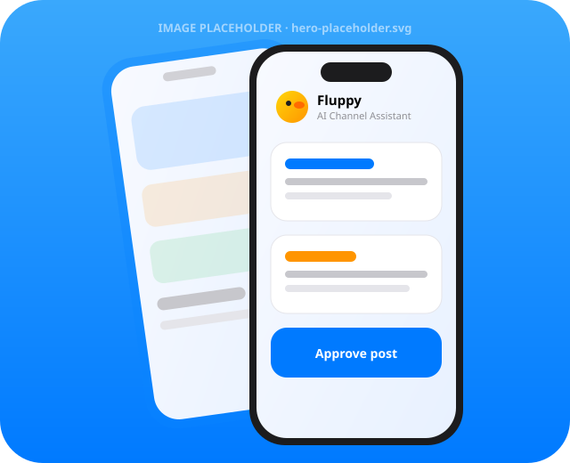
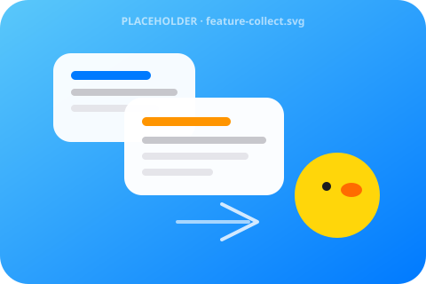
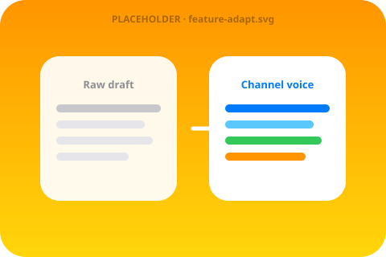
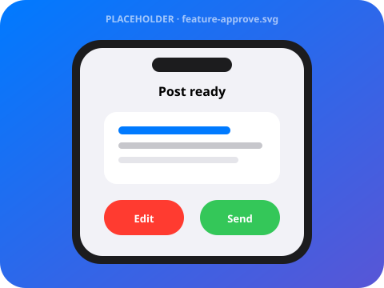
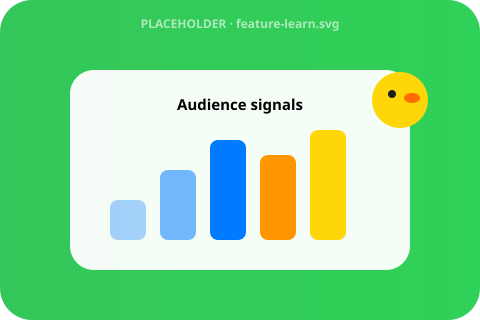

What is Fluppy?
Fluppy is an AI co-pilot for Telegram channel owners. It lives inside Telegram as a Mini App and bot — so you draft, review, and publish without leaving the app your audience already uses.
AI assistant for running Telegram channels — Mini App + bot in one place.
Fluppy collects relevant content, adapts text to your channel’s style, sends posts for approval, and learns from audience reactions and past posts.
Privacy-first by design. You stay in control of every publish.

Fluppy is an AI co-pilot for Telegram channel owners. It lives inside Telegram as a Mini App and bot — so you draft, review, and publish without leaving the app your audience already uses.
Fluppy watches topics you care about, then rewrites drafts in your channel’s style — tone, length, emoji habits, and posting rhythm — before anything goes live.
Every post is sent for your approval. Edit, schedule, or reject with one tap. Fluppy never publishes without you — your channel, your voice, your call.
Built with privacy in mind: only the data needed to run your channel workflows, clear controls, and no tokenomics games. Just a practical assistant for creators.
Pull relevant stories, links, and trends matched to your channel’s topics.
Rewrite into your channel voice — style, length, and pacing.
Review drafts in Telegram. Edit, schedule, or send when ready.
Improve from reactions and past posts so the next draft is sharper.

Surface relevant material for your niche so you always have something worth posting.

Adapt every text to your channel’s style — from punchy blurbs to long-form digests.

Posts land in your chat for a quick yes, edit, or skip — nothing ships without you.

Reactions and past winners teach Fluppy what resonates — so drafts get better over time.
Socials